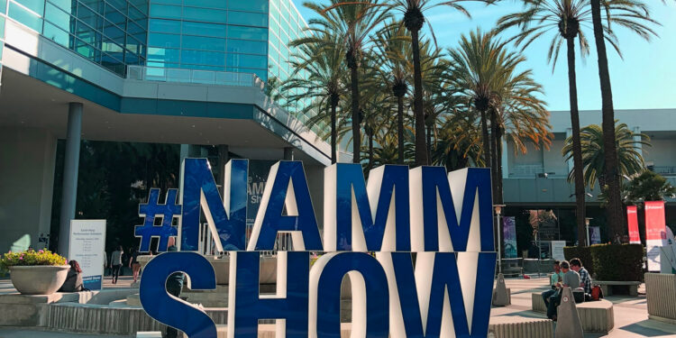

2022 NAMM show rescheduled to June
April, 2022
2022's Summer NAMM show in Nashville has been cancelled, and merged into one "greatest hits" NAMM to take place in Anaheim from June 3–5, 2022
The 2022 NAMM show has been rescheduled from January 20–23 to June 3–5, 2022, it was announced today. Furthermore, NAMM – short for the National Association of Music Merchants – announced that this year's Summer NAMM show, which typically takes place in July in Nashville, has been cancelled, and will be merged into the June show in Anaheim. "The industry has not stopped evolving and innovating during the pandemic, and the NAMM Show is evolving, as well," read a statement from NAMM President and CEO Joe Lamond.
"As the health and safety of our members remains top of mind, and after carefully listening to companies here in the U.S. and around the world, the new dates will help members maximize their opportunities and accelerate what has arguably been a transformative time both in new products and in how they come to market. I imagine this gathering will have the kind of impact of a Beatles moment or the introduction of MIDI – definitely one you will not want to miss.” Typically occurring at the beginning of the year, winter NAMM typically heralds the launch and announcement of many of the year's biggest new products and lineup overhauls. It'll be interesting to see if guitar gear's heavy hitters opt to hold their biggest product reveals for a few months to coincide with the summer's mega-NAMM, or launch in January as per usual.
Previously, Summer NAMM was cancelled in 2020, while winter NAMM 2021, re-branded as Believe in Music Week, took place digitally from January 18-22 of this year. This year's Summer NAMM show, however, occurred as scheduled in Nashville from July 15–16.